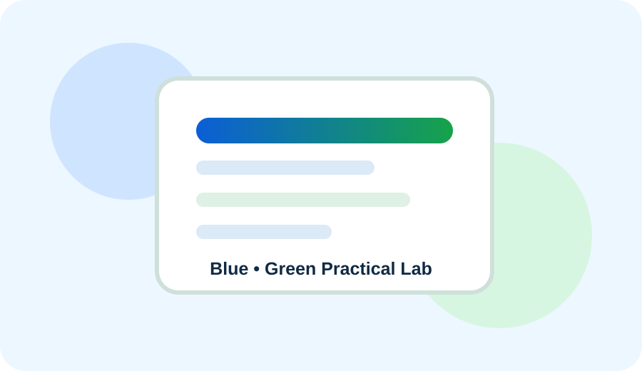

Experiment 130 of 270
Change attributes dynamically

assets/style.css; the working demonstration for this experiment is included directly in the page.A working JavaScript, DOM, event, form, browser, storage or mini-project demonstration from the assignment list.

assets/style.css; the working demonstration for this experiment is included directly in the page.